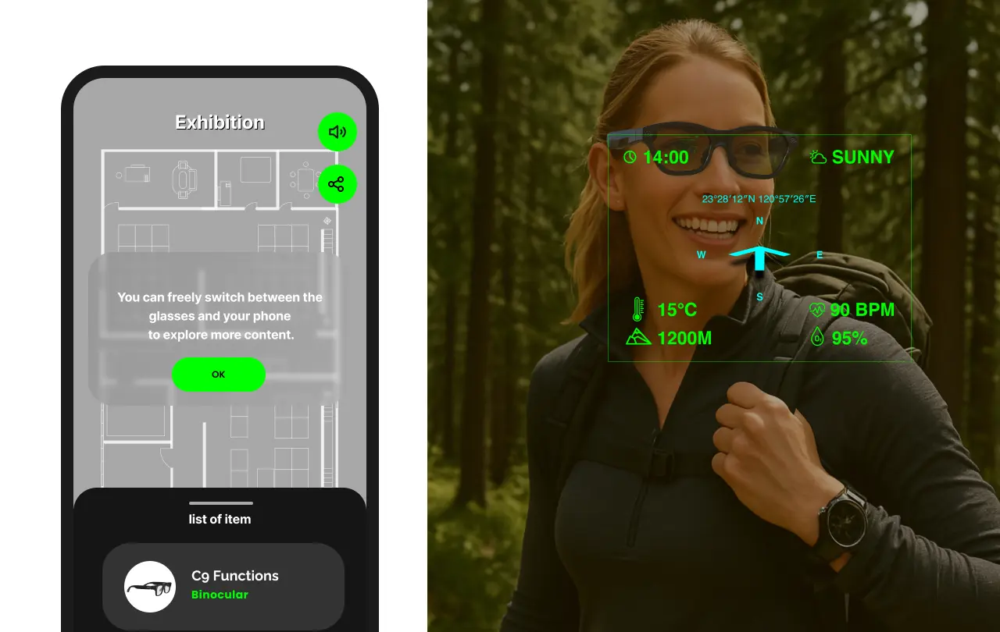

The demo was showing off the phone — not the glasses.
HJ1 is Jorjin's in-house AI smart glasses with an eye-tracking module. Before I joined, the demo approach was "glasses connected to phone" — showcasing the phone software and display resolution, not the glasses' own interaction capabilities.
After joining, I led the complete B2B demo experience design for the HJ1 standalone device. With no full OS at the time, UI assets and detailed interaction specs had to be delivered directly to firmware engineers for implementation — and we jointly tuned the eye-tracking UX parameters (trigger timing, trigger zone, data smoothing, and outlier rejection).
No OS, unpredictable eye tracking, and five minutes to lose the room.
- No OS support. Designs had to rely entirely on firmware implementation with highly precise specs — no UI frameworks available.
- Uncertain eye-tracking success rate. Detection depends on each user's facial geometry (IPD, nose bridge height, nose pad size) — calibration couldn't be guaranteed for every visitor.
- Demo time pressure. The original demo ran ~5 minutes, mixing touchpad and eye tracking, making it hard for B2B clients to focus on the core advantage.
The real question wasn't features — it was guaranteeing a clean first run.
The core design question became: how do we ensure every B2B visitor completes a full eye-tracking interaction, given limited time and an unstable detection success rate? With no ready-made OS to lean on, the stability of the trigger itself was the thing to solve. So we jointly tested and tuned four parameters with firmware engineers to find the most reliable trigger across varying facial geometries:
- Trigger timing. How long a dwell counts as a "selection" — balancing accidental triggers against sluggish response.
- Trigger zone. The size of the active detection area, affecting precision and error tolerance.
- Data smoothing. Smoothing the gaze trajectory to filter out micro-jitter.
- Outlier rejection. Discarding sudden deviation data to prevent false positives.
A 1.5-minute flow where failure is invisible.
I rebuilt the fragmented 5-minute flow (mixing touchpad and eye tracking) into a sequential experience with eye tracking as the sole interaction modality — four stages, 1.5 minutes.
- Display confirmation. Verify the user can see the glasses display clearly; establish basic trust.
- Eye-tracking calibration. Complete calibration and establish the detection baseline.
- Trigger trial. Let the user feel what eye-dwell selection is like; build interaction confidence.
- Use-case demo. Receive a meeting notification → eye-trigger → read the full message; eye tracking shown in a real scenario.
Key decision: each stage auto-advances on completion. If eye tracking fails to trigger, the system plays through automatically — making "failure" invisible to the visitor and guaranteeing every user completes the full flow.
The same interaction core was then adapted to each venue, demonstrating the system's extensibility:
- CES 2026 (Las Vegas). Standard demo flow, showcasing eye-tracking interaction to global B2B clients.
- Amazon B2B demo (conference room). Receive a message notification → eye-trigger to read — the value of eye tracking in an office context.
- Sports Technology Center (dual-screen). Eye-select a ball trajectory → result projected to the venue's large screen, extending the interaction to "glasses × physical space."
Six months, six events, 1,000+ hands-on demos.
Demo runtime reduced from 5 minutes to 1.5 minutes. Supported 6 international exhibitions and B2B demos within six months, accumulating 1,000+ customer experiences.
Restructured the experience sequence, removed touchpad/eye-tracking mixing, and added auto-advance — ensuring every visitor completes the full eye-tracking interaction.
Strong visitor feedback led to follow-up partnership discussions between Foxconn and Amazon. The demo was iterated over six months, spanning international exhibitions and enterprise B2B demos.
| Date | Event |
|---|---|
| 2025/9/5 | Amazon B2B Demo — Conference room scenario, eye-triggered message reading |
| 2025/10/16 | FUTEX Future Tech Expo — Sports tech pavilion, ball trajectory × large-screen dual display |
| 2026/1/6–9 | CES 2026 — Las Vegas |
| 2026/1/31–2/2 | MILO |
| 2026/4/28–29 | XR Expo |
| 2026/5/3–8 | SID |
HJ1 is a lightweight monocular color smart glasses co-developed by Jorjin × Foxconn, positioned as a demo prototype for eye tracking and new hardware integration, aimed at engaging commercial clients and driving mass production. After six months of continuous demo iteration (trigger-zone refinement, calibration tutorial methods, and more), the project has been succeeded by a next-generation integrated product — the HJ1 demo phase has officially concluded.
Designing a demo taught me something a product can't: every demo might be the visitor's only encounter with the technology, so there's no buffer for errors — first impression is the final impression. The core of demo design isn't "show everything the product can do"; it's "leave the one most important thing in the visitor's mind." When hardware has limits and some features can't be shown live, a controlled, fault-tolerant flow is itself a design tool.